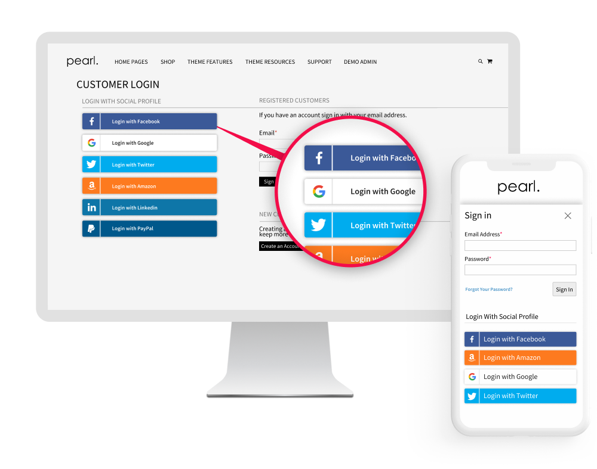
GUIDE FOR MAGENTO 2 SOCIAL LOGIN.
This extension is also included in the Pearl Theme.
HOW TO INSTALL
This extension is FREE and OPEN-SOURCE. The source code and installation files are available on GitHub.
GitHub Repository
Access the extension source code and download the installation files from our GitHub repository:
https://github.com/Weltpixel/magento2-weltpixel-social-login
Installation Instructions
Please refer to the README file in the GitHub repository for detailed installation instructions.
General Installation Steps
- Step 1: Download or clone the repository from GitHub
- Step 2: Copy the extension files to your Magento 2 app/code/ directory
- Step 3: Run setup commands:
php bin/magento setup:upgrade php bin/magento setup:di:compile php bin/magento setup:static-content:deploy -f
- Step 4: Flush cache: php bin/magento cache:flush
CONFIGURATION.
ENABLE SOCIAL LOGIN.
- Enable Social Login [Yes / No] - Enable/Disable the WeltPixel Social Login Extension.
- Show Social Login On Cart Page [Yes / No] - Choose whether or not to show Social Login buttons on the Cart page.
- Display Customer Sign In/Create Account in a popup [Yes / No] - Choose whether or not to display the Sign In/Create Account block in a popup.
- Social Login Popup Style [Default / Right Side] - Select the style for the Social Login popup. Mobile devices are defaulted to the Right Side design.
Go to Admin > Stores > Configuration > WeltPixel > Social Login > General Settings.
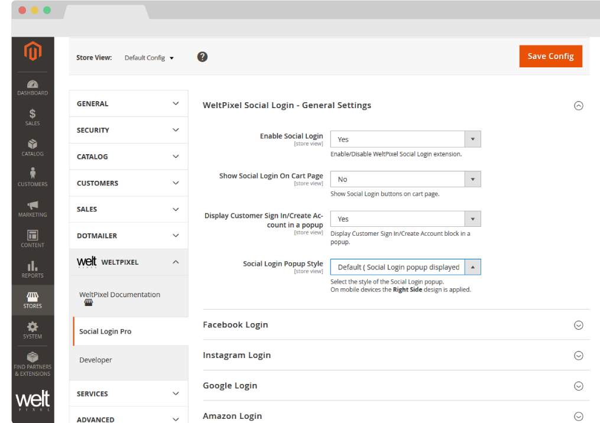
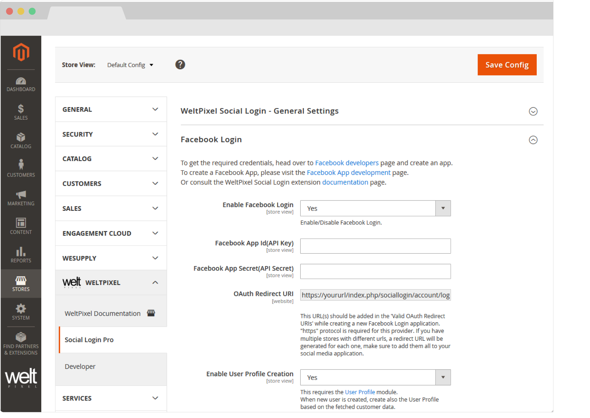
FACEBOOK LOGIN.
-
Go to Admin > Stores > Configuration > WeltPixel > Social Login > Facebook Login
- Enable Facebook Login [Yes / No] - Enable/Disable Facebook Login.
- Facebook App ID and Facebook App Secret can be found when configuring the Facebook Login API by following the configuration steps below.
- OAuth Redirect URI - This URL should be used while creating a new Social Login application.
- Enable User Profile Creation - If set to Yes, a User Profile will be created when logging in with Facebook. Requires the User Profile extension.
Configuring the Facebook API.
- We try to provide an explicit social media account dashboard configuration, however, sometimes, the platforms update their layouts and this is something that is out of our control. Just reach out via support and let us know if we need to update any information
Step 1.
- Head to >>Facebook for Developers<< and log in with your Facebook account.
- Click on Add a New App and enter the app's Display Name, along with the contact email and click Create App ID.
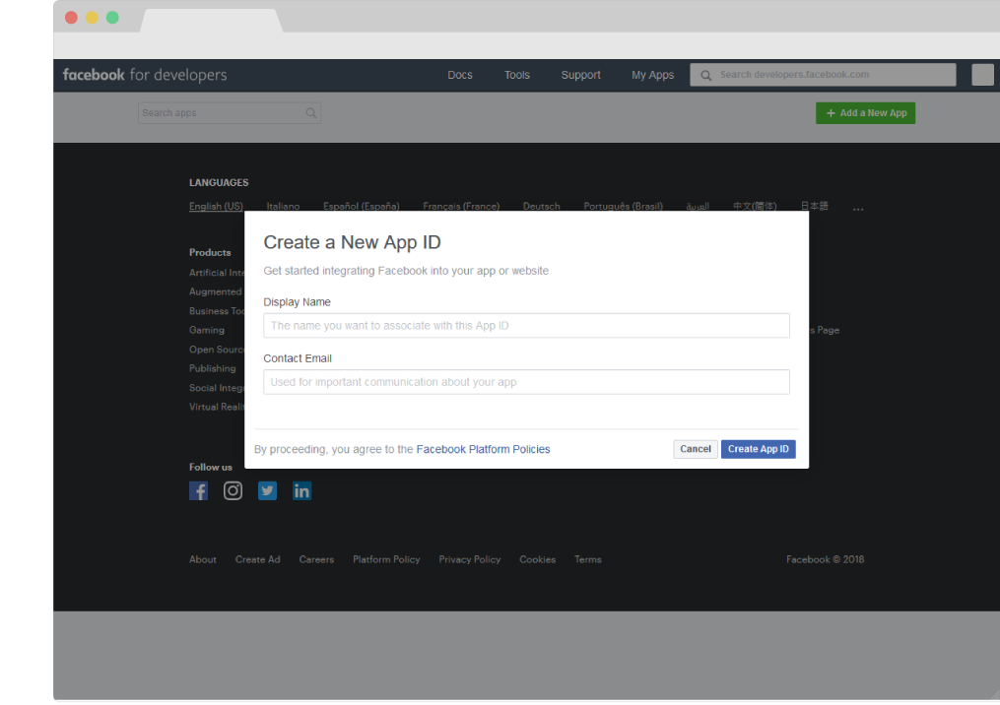
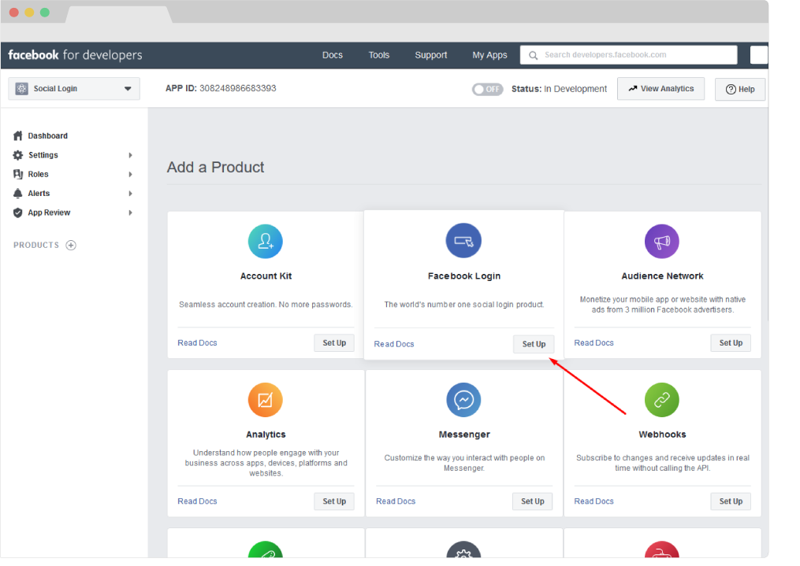
Step 2.
- Find the Facebook Login product and click Set Up.
- Select Web as the platform, and follow the configuration steps presented.
Step 3.
- You'll see that Facebook Login has been added under Products. Click on it and select Settings from the dropdown menu.
- We'll be adding the OAuth Redirect URI, which we can find in the Magento Admin under WeltPixel -> Social Login -> Facebook Login -> OAuth Redirect URI.
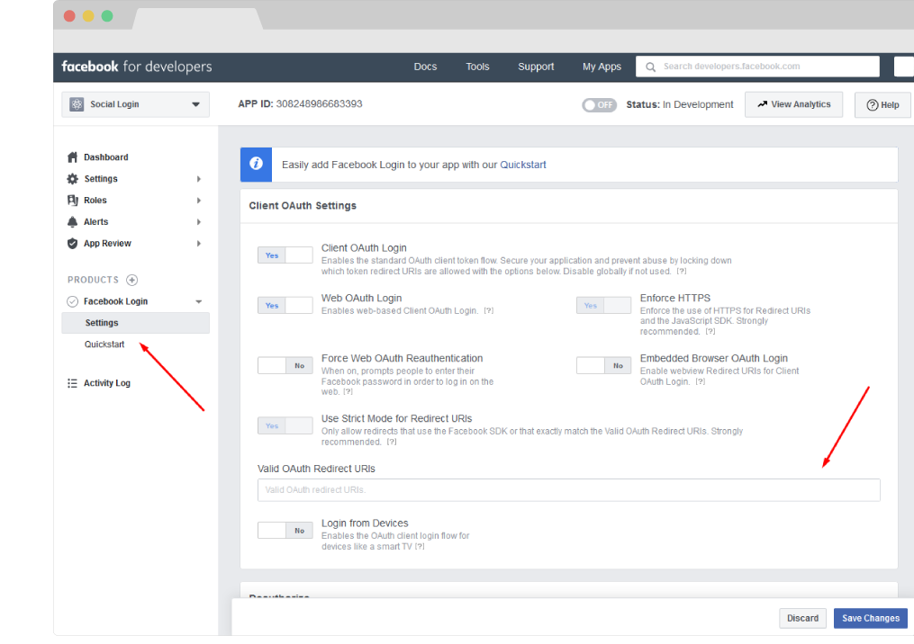
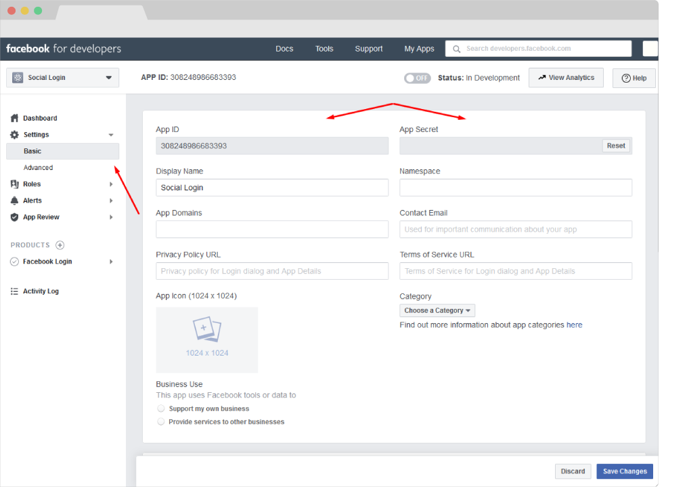
Step 4.
- Finally, we'll get the App ID and App Secret. To do this, from the menu on the left hand side, select Settings, and from the dropdown, select Basic.
- Remember to also fill out the Privacy Policy and Terms of Service URLs.
- Take the App ID and App Secret (you can also fill in the rest of the details on this page) and enter them into the Magento Admin under the respective fields.
- Note!: The Privacy Policy URL is required for the app to go Live.
- Set the App Status to Live.
- Save the configuration and you should be done!
How to Add Google Login in Magento?
Social Login only works with HTTPS connection, make sure your store is configured to use a secure connection.
-
Go to Admin > Stores > Configuration > WeltPixel > Social Login > Google Login
- Enable Google Login [Yes / No] - Enable/Disable Google Login.
- Google Client ID and Google Client Secret - Can be found by following the configuration steps presented below.
- OAuth Redirect URI - This URL should be used while creating a new Social Login application.
- Enable User Profile Creation - If set to Yes, a User Profile will be created when logging in with Google. Requires the User Profile extension.
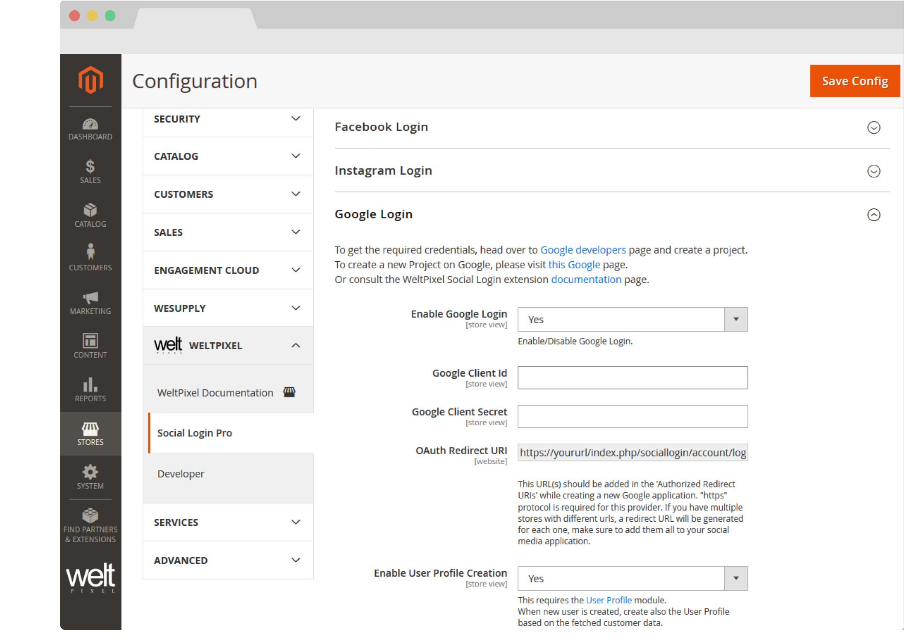
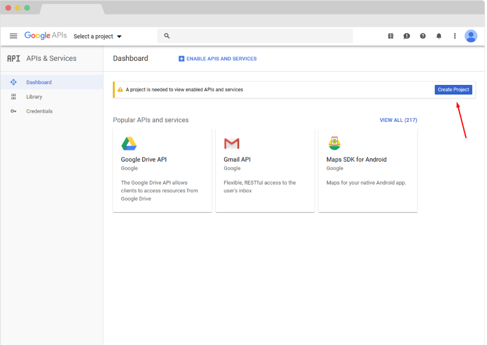
Configuring the Google API.
- We try to provide an explicit social media account dashboard configuration, however, sometimes, the platforms update their layouts and this is something that is out of our control. Just reach out via support and let us know if we need to update any information
Step 1.
- Head over to the >>Google Developer platform<< and sign in with your Google account.
- Click on Create Project and fill in the required details.
Step 2.
- Click on Credentials in the menu on the left hand side.
- Click on OAuth consent screen, fill in the required details and hit Save.
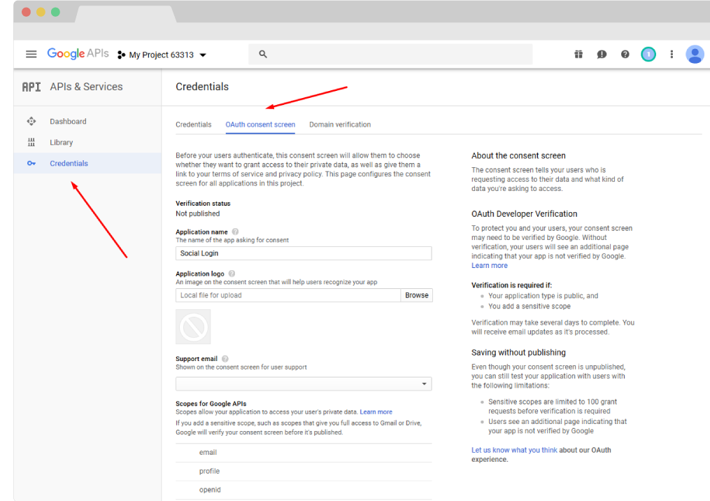
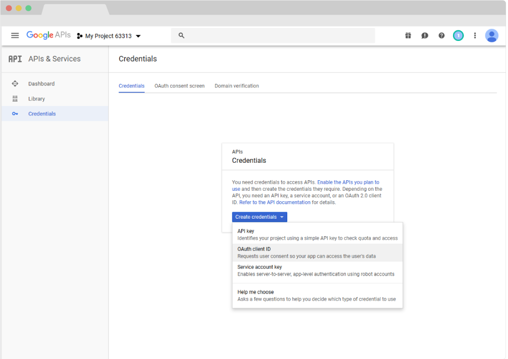
Step 3.
- Next, click on Create credentials and then on OAuth client ID.
Step 4.
- Select Web application and fill in the required details.
- Under Authorized redirect URIs, enter the URI found in Magento Admin -> WeltPixel -> Social Login -> Google Login -> OAuth Redirect URI.
- Click Create
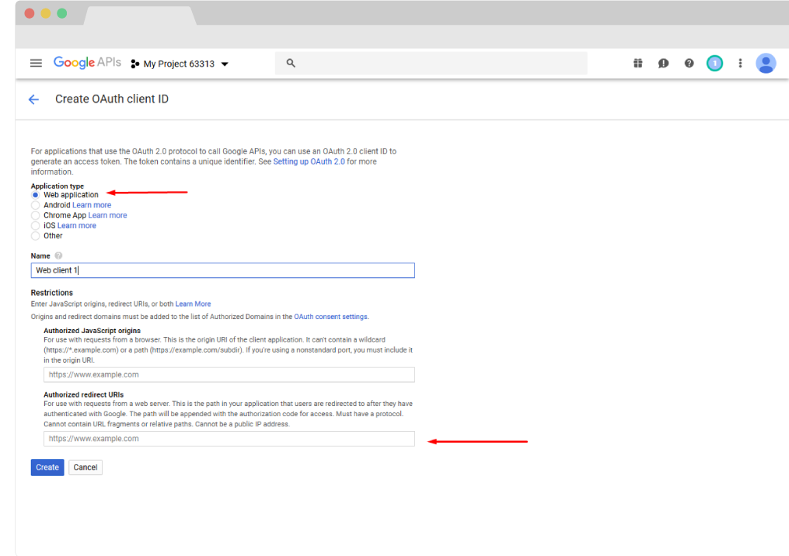
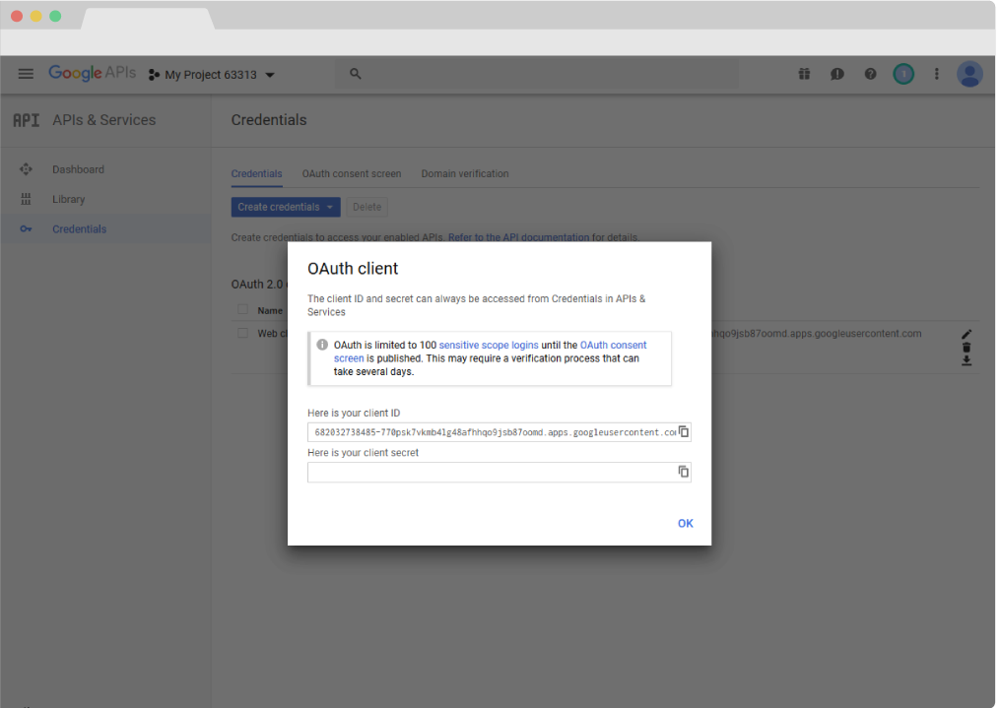
Step 5.
- You'll then be presented with your Client ID and Client Secret.
- Copy those and paste them into their respective fields in the Magento Admin.
- Save the configuration and you should be done!
AMAZON LOGIN.
-
Go to Admin > Stores > Configuration > WeltPixel > Social Login > Amazon Login
- Enable Amazon Login [Yes / No] - Enable/Disable Amazon Login.
- Amazon Client ID and Amazon Client Secret - Can be found by following the configuration steps presented below.
- OAuth Redirect URI - This URL should be used while creating a new Social Login application.
- Enable User Profile Creation - If set to Yes, a User Profile will be created when logging in with Amazon. Requires the User Profile extension.
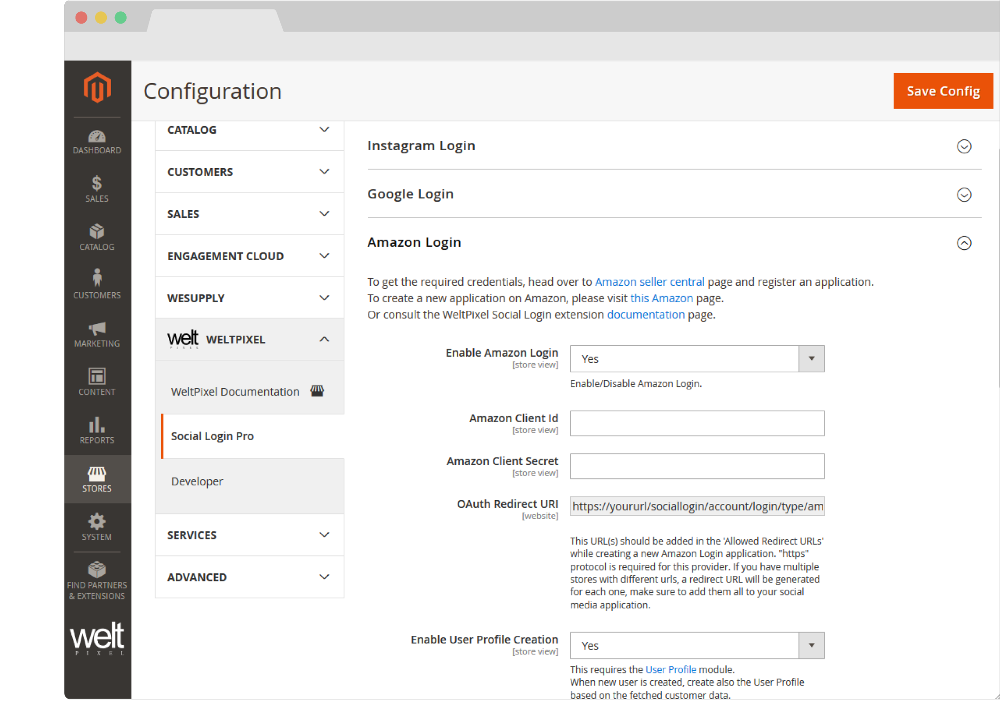
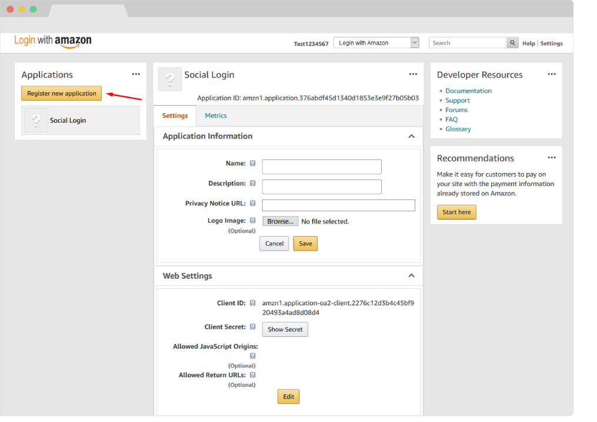
Configuring the Amazon API.
- We try to provide an explicit social media account dashboard configuration, however, sometimes, the platforms update their layouts and this is something that is out of our control. Just reach out via support and let us know if we need to update any information
Step 1.
- Head over to the >>Amazon Developer Dashboard<< and log in using your Amazon account.
- Click on Register new application.
Step 2.
- Fill out the necessary details required by the form.
- Click on Save.
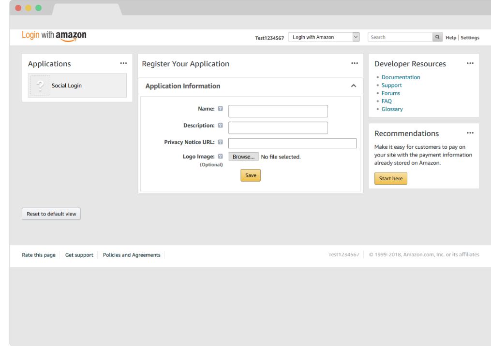
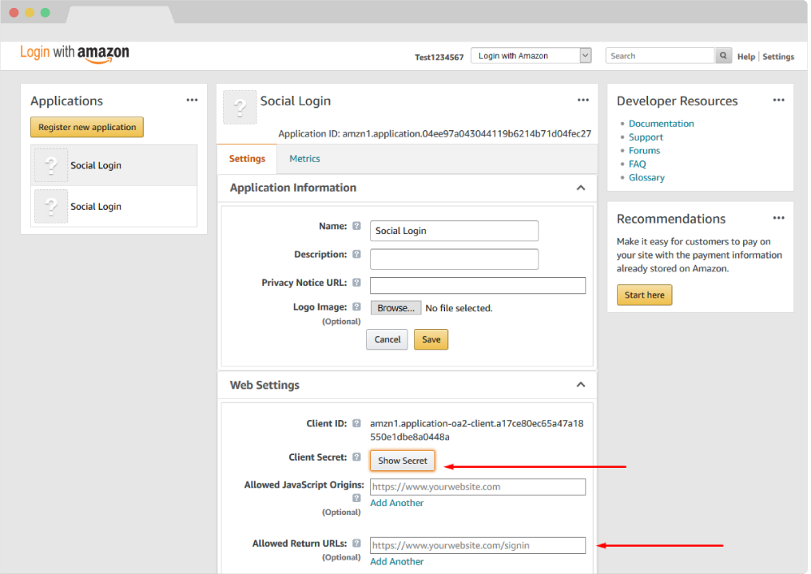
Step 3.
- Click on Show Secret to reveal your Client Secret.
- Enter the OAuth Redirect URI found in the Magento Admin -> WeltPixel -> Social Login -> Amazon Login -> OAuth Redirect URI under Allowed Return URLs.
- Copy your Client ID and Client Secret and paste them into their respective fields in the Magento Admin.
- Save the configuration and you should be done!
TWITTER LOGIN.
-
Go to Admin > Stores > Configuration > WeltPixel > Social Login > Twitter Login
- Enable Twitter Login [Yes / No] - Enable/Disable Twitter Login.
- Twitter Client ID and Twitter Client Secret - Can be found by following the configuration steps presented below.
- OAuth Redirect URI - This URL should be used while creating a new Social Login application.
- Enable User Profile Creation - If set to Yes, a User Profile will be created when logging in with Twitter. Requires the User Profile extension.
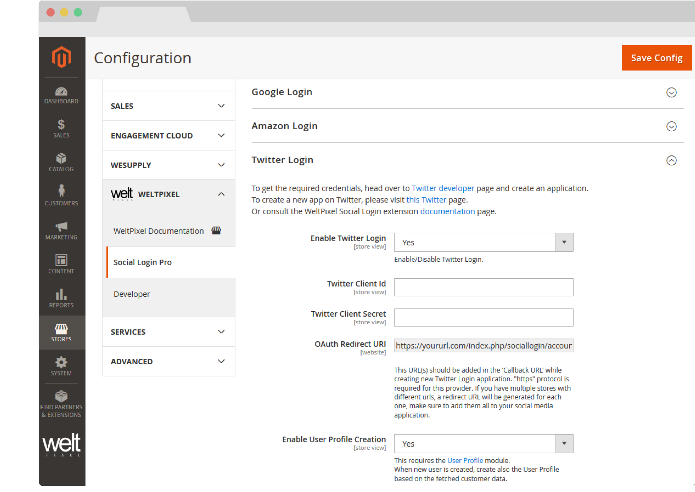
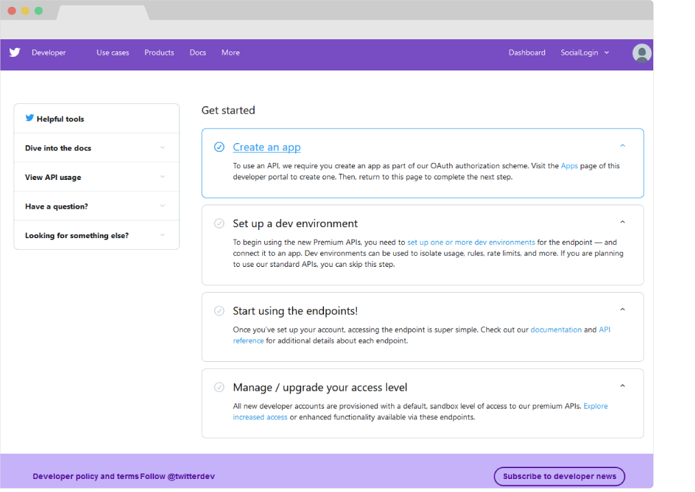
Configuring the Twitter API.
- We try to provide an explicit social media account dashboard configuration, however, sometimes, the platforms update their layouts and this is something that is out of our control. Just reach out via support and let us know if we need to update any information
Step 1.
- Head over to the >>Twitter Developer Dashboard<< and log in using your Twitter account.
- Click on Create an app.
Step 2.
- Fill out the App fields.
- Make sure you check the "Enable Sign In with Twitter" box and fill out the Privacy Policy and Terms of Service URLs.
- Fill in the Callback URL with the OAuth URL found in the Magento Admin under Admin > WeltPixel > Social Login > Twitter Login > OAuth Redirect URI.
- Click on Create.
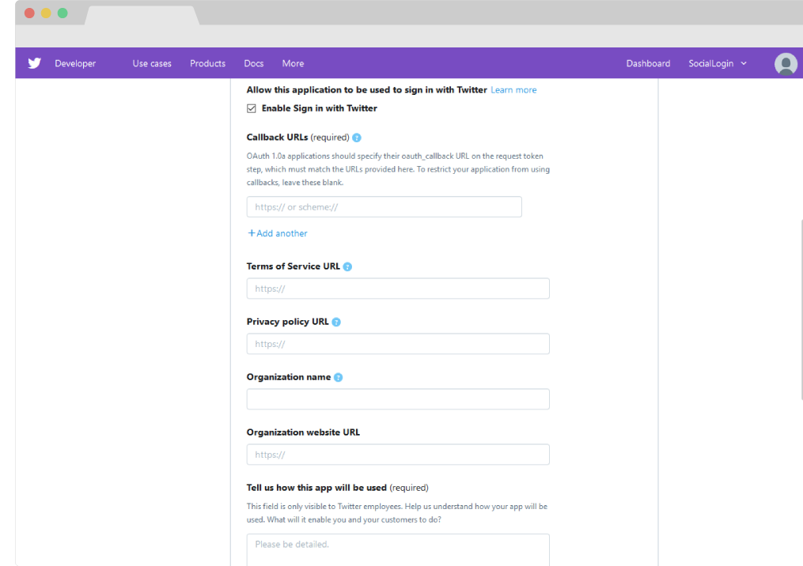
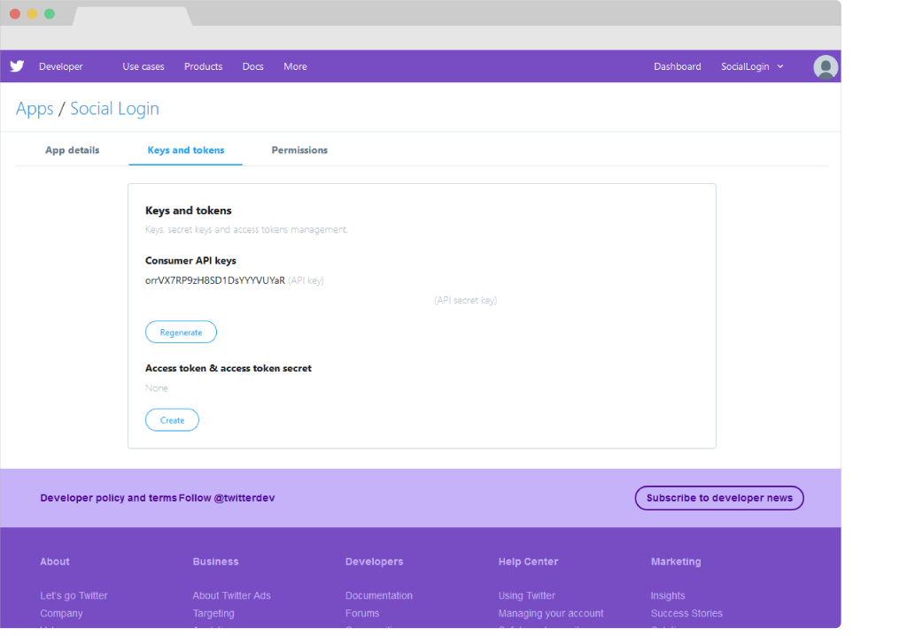
Step 3.
- Click on Keys and Tokens.
- Get the API key and API secret key and enter them into their respective fields in the Magento Admin.
- Click on Permissions and make sure that you can see "Request email address" under Additional Permissions.
- Save the configuration and you should be done!
LINKEDIN LOGIN.
-
Go to Admin > Stores > Configuration > WeltPixel > Social Login > LinkedIn Login
- Enable LinkedIn Login [Yes / No] - Enable/Disable LinkedIn Login.
- LinkedIn Client ID and LinkedIn Client Secret - Can be found by following the configuration steps presented below.
- OAuth Redirect URI - This URL should be used while creating a new Social Login application.
- Enable User Profile Creation - If set to Yes, a User Profile will be created when logging in with LinkedIn. Requires the User Profile extension.
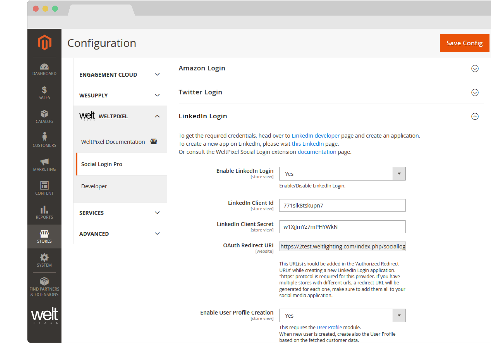
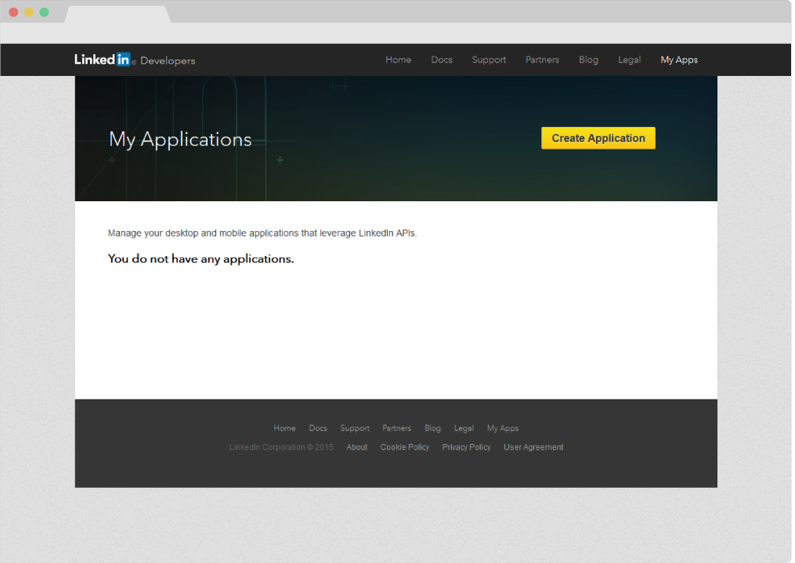
Configuring the LinkedIn API.
- We try to provide an explicit social media account dashboard configuration, however, sometimes, the platforms update their layouts and this is something that is out of our control. Just reach out via support and let us know if we need to update any information
Step 1.
- Head over to the >>LinkedIn Developer Dashboard<< and log in using your LinkedIn account.
- Click on Create Application.
Step 2.
- Fill out the App fields.
- Make sure you fill out the Privacy Policy URL.
- Hit Submit.
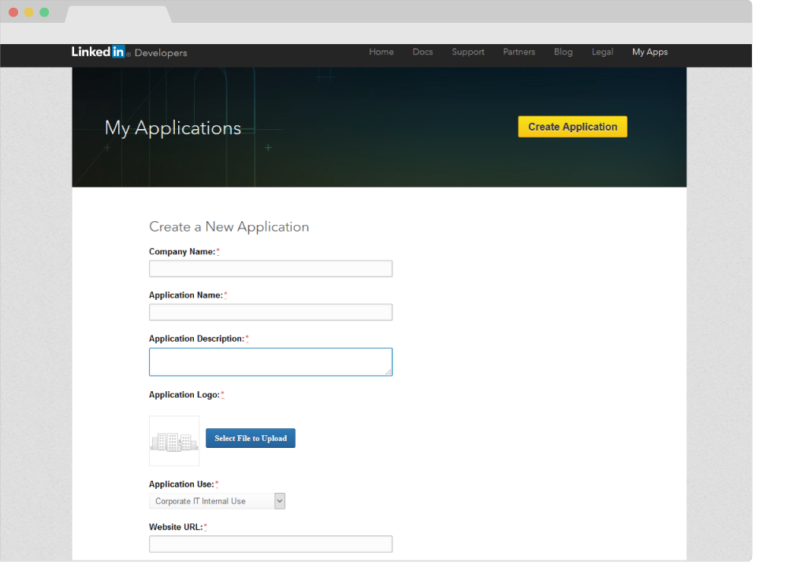
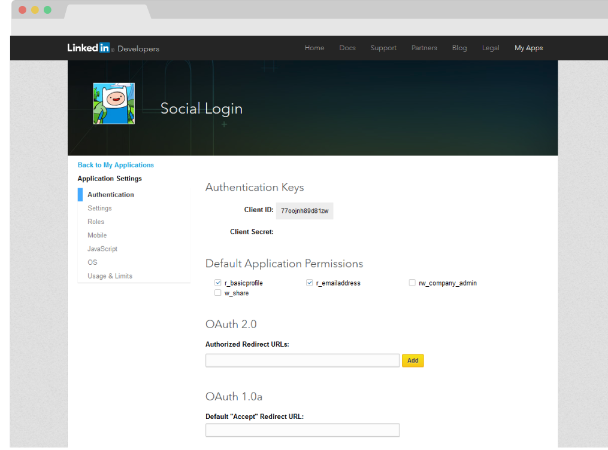
Step 3.
- Under Authentication, you'll have the Client ID and Client Secret. Enter those into their respective fields in the Magento Admin.
- Under Default Application Permissions, make sure you have the r_basicprofile and r_emailaddress boxes checked.
- Fill in the OAuth 2.0 redirect URL with the URI generated under Admin > WeltPixel > Social Login > LinkedIn Login > OAuth Redirect URI.
- Click on Update.
- Save the configuration and you should be done!
PAYPAL LOGIN.
-
Go to Admin > Stores > Configuration > WeltPixel > Social Login > PayPal Login
- Enable PayPal Login [Yes / No] - Enable/Disable PayPal Login.
- PayPal Mode - Select Live or Sandbox Mode for PayPal App. If you select Live Mode, make sure your Live PayPal application allows the "Email Address" information. PayPal only allows this after submitting the application for review. More info in the PayPal App settings -> Login with PayPal -> Advanced Options.
- PayPal Client ID and PayPal Client Secret - Can be found by following the configuration steps presented below.
- OAuth Redirect URI - This URL should be used while creating a new Social Login application.
- Enable User Profile Creation - If set to Yes, a User Profile will be created when logging in with PayPal. Requires the User Profile extension.
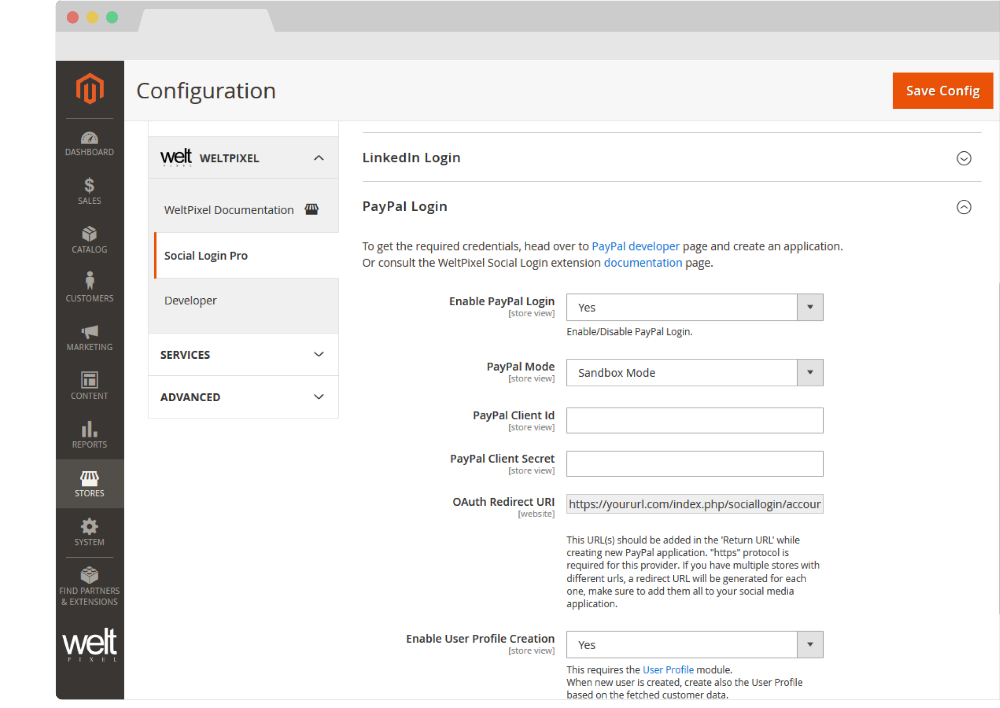
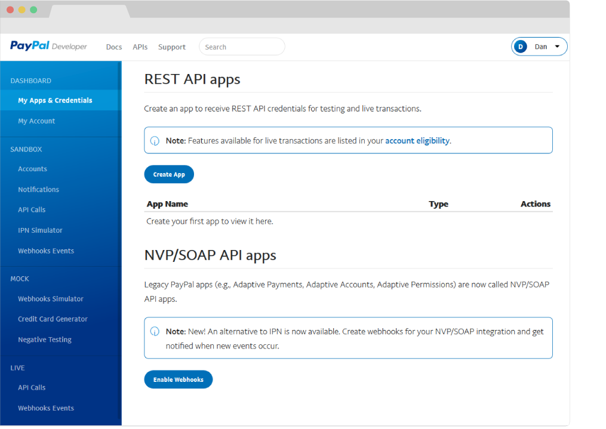
Configuring the PayPal API.
- We try to provide an explicit social media account dashboard configuration, however, sometimes, the platforms update their layouts and this is something that is out of our control. Just reach out via support and let us know if we need to update any information
Step 1.
- Head over to the PayPal Developer Dashboard and log in using your PayPal account.
- Scroll down to REST API Apps and click on Create App.
Note!: Live credentials are available only when using or upgrading to a Premier or Business account.
Step 2.
- Name your App.
- Select your developer account.
- Hit Create App.
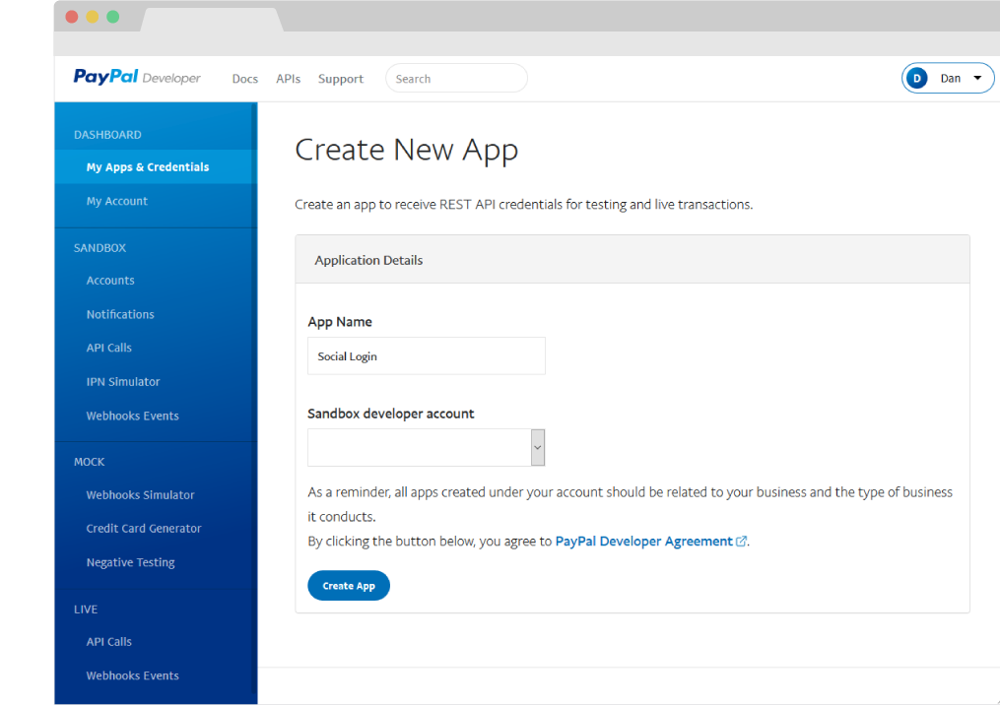
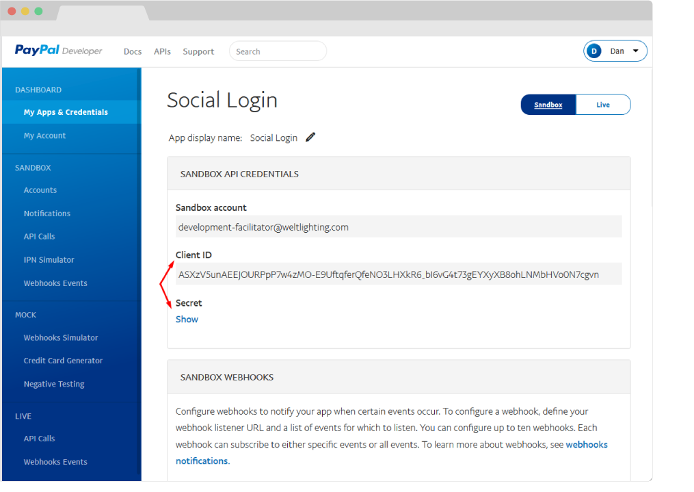
Step 3.
- You can find your Client ID and Client Secret in this next section. Copy them over into their respective fields in the Magento Admin.
- Click Save Config in Admin.
Step 4.
- Scroll down to the Return URL section. Add the OAuth Redirect URI found in Admin > WeltPixel > Social Login > PayPal Login > OAuth Redirect URI.
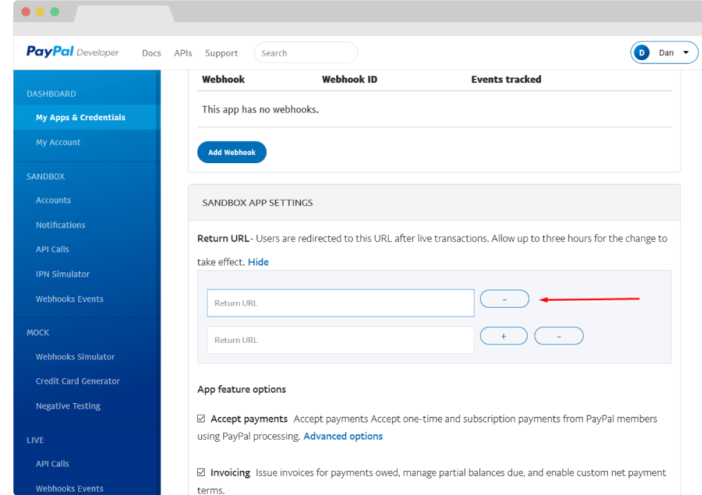
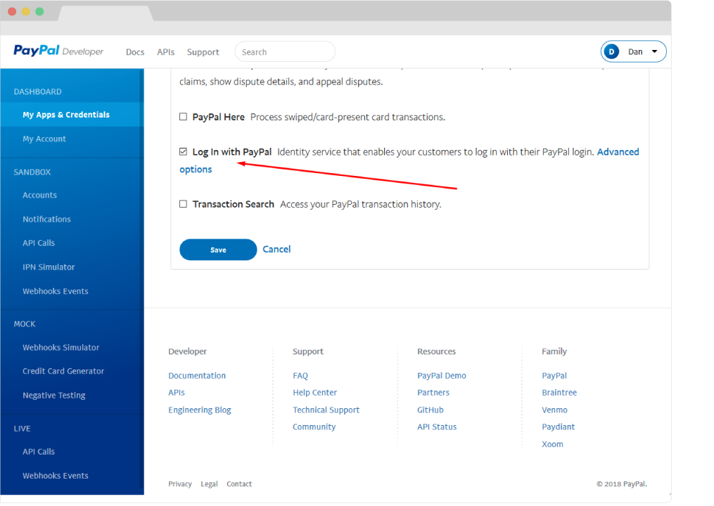
Step 5.
- Make sure you have the Log In with PayPal box checked.
- Click Advanced options and make sure you have Full name and Email address checked.
- Fill out the Privacy policy and User agreement URLs.
- Click Save.
Live mode troubleshooting: If you're receiving an error while your App is in Live mode, make sure the App allows the "Email" information to be requested. If the option is greyed out, you may need to submit your App for review.
Change Log.
What's new in v.1.16.0 - January 7, 2026
- Giving back: As a celebration of over 10 years of activity within the Magento 2 ecosystem, and as a way to give back to the community, a number of WeltPixel extensions (both FREE and paid) have officially gone fully Open Source via public Github repositories. Find the full list on Github.
- This extension has moved to a fully Open Source model and is available publicly on Github. See the link in the Change Log entry above to find it.
What’s new in v.1.15.9 - October 28, 2025
- Magento Compatibility: Introduced compatibility with the latest released Magento 2 Security Patches - Magento 2.4.8-p3, Magento 2.4.7-p8, Magento 2.4.6-p13, Magento 2.4.5-p15 & Magento 2.4.4-p16.
- New Feature: Added improvements to Magento Admin messaging around Product Updates to ensure visual clarity for users not running the latest product release.
- New Feature: Added .ddev.site and .cloudwaysapps.com as accepted development domains. These domains will no longer require additional license keys.
What’s new in v.1.15.7 - September 2, 2025
- Magento Compatibility: Introduced compatibility with the latest released Magento 2 Security Patches - Magento 2.4.8-p2, Magento 2.4.7-p7, Magento 2.4.6-p12, Magento 2.4.5-p14 & Magento 2.4.4-p15.
- Added additional validations to prevent Magento Admin errors when the Backend extension could not fetch the current server user due to permissions issues.
- Added adjustments to frontend templates to adhere to Magento Best Practices regarding XSS validations.
- Fixed a CSP issue that would sometimes prevent orders from being created via the Magento Admin.
What’s new in v.1.15.3 - June 20, 2025
- Magento Compatibility: Introduced compatibility with the latest Magento 2.4.8-p1, 2.4.7-p6, 2.4.6-p11 & 2.4.5-p13 Security Patches releases. Upgrade ASAP to keep your store secure.
- Fixed the Backend functionality that enables users to change the default Magento CSP Restriction Mode via the Magento Admin. This was broken starting with Magento 2.4.7.
- Fixed an error that would be thrown during compilation via the Command Line on PHP 7.4.
What’s new in v.1.15.0 - April 22, 2025
- Magento Compatibility: Introduced compatibility with the new Magento 2.4.8 release, as well as the accompanying 2.4.7-p5, 2.4.6-p10, 2.4.5-p12 and 2.4.4-p13 Security Patches.
- PHP Compatibility: Introduced compatibilty with PHP 8.4, which is now officially compatible with the latest Magento 2.4.8 version.
- New Feature: Added magento2.docker as a valid domain for development purposes.
- New Feature: Added ddev.site as a valid domain for development purposes.
- Fixed an issue that would prevent certain extension options from correctly applying in Single Store Mode instances.
- Added backend licensing adjustments for compatibility with the Google Analytics & Social Marketing Suite PRO.
What’s new in v.1.14.13 - February 17, 2025
- Magento Compatibility: Introduced compatibility with the newly released Magento 2.4.7-p4, 2.4.6-p9, 2.4.5-p11 and 2.4.4-p12 versions.
- Added additional adjustments in the module's Magento Admin settings to ensure brand alignment with X (formerly Twitter).
- Fixed an issue related to licensing which would prevent license keys from being validated various subdomains.
What’s new in v.1.14.11 - January 15, 2025
- Removed deprecated Magento 2.2.x code version from extension package.
What’s new in v.1.14.9 - November 26, 2024
- New Feature: The extension once again benefits from the Instagram Login functionality, which was previously deprecated due to Instagram's API being retired. Instagram has recently released a new API which permits using the login functionality again, which our module now benefits from.
- Added minor Magento Admin adjustments to the module status section for increased clarity and compatibility with server-side Social Pixel addons.
What’s new in v.1.14.7 - October 11, 2024
- Compatibility: Introduced compatibility with the latest Magento 2.4.7-p3, 2.4.6-p8, 2.4.5-p10 and 2.4.4-p11 versions, which come with critical security adjustments for the platform. Magento 2 merchants are urged to upgrade to the latest patches ASAP.
- Added a new patch for the extension, found in the patches folder, which fixes a compilation error that is thrown when the extension is installed on a Magento instance that does not have the core ReCaptcha modules enabled. The patch is not required if the modules are present and enabled on the environment.
- Added various code updates for increased security around the licensing functionality as well as the Help Center and WeltPixel Developer Magento Admin sections.
What’s new in v.1.14.5 - August 23, 2024
- Compatibility: Introduced compatibility with the latest Magento 2.4.7-p2, 2.4.6-p7, 2.4.5-p9 and 2.4.4-p10 versions, which come with critical security adjustments for the platform. Magento 2 merchants are urged to upgrade to the latest patches ASAP.
What’s new in v.1.14.3 - June 20, 2024
- Compatibility: Introduced compatibility with the latest Magento 2.4.7-p1, 2.4.6-p6, 2.4.5-p8, 2.4.4-p9 versions, which come with critical security adjustments for the platform. Magento 2 merchants are urged to upgrade to the latest patches ASAP.
- New Feature: Added a new section in the Magento Admin that checks to make sure the latest product version is installed and notifies in case an update is available, as well as a button that allows for new features to be requested.
What’s new in v.1.14.1 - April 19, 2024
- Fixed an error that would be thrown on the frontend when trying to create an account via the extension's popup functionality. This would also prevent the account from being created.
- Fixed an issue that would sometimes result in an error that prevented a successful login due to a premature expiration of the password token.
- Fixed an error that would sometimes be thrown on the frontend when using the "Login as Customer" functionality in the Magento Admin section.
- Confirmed compatibility with the latest Magento 2.4.7 release, as well as newly released 2.4.6-p5, 2.4.5-p7 & 2.4.4-p8 Security Patches.
- Confirmed compatibility with PHP 8.3 on the Magento 2.4.7 release. PHP 8.2 is also supported for this Magento version.
- Added security improvements to the Backend module's license verification process.
What’s new in v.1.11.21 - January 9, 2024
- Fixed a bug that would cause the Social Login popup window to close prematurely in cases in which errors caused by incorrect app configurations were thrown.
- Added various optimizations for ADA compliance to ensure a high degree of compatibility and increased scores across testing platforms.
- Added minor code adjustments for increased compatibility with 3rd party extensions/functionalities.
- Added a minor translation adjustment for the Reset Password text on the frontend.
- Fixed an error that would be thrown in the WeltPixel -> Extensions Version admin section when a module's composer.json file was missing the version node.
What’s new in v.1.11.19 - October 19, 2023
- New Feature: Login with Twitter redesign. The Twitter login button has been updated and now uses the new "X" branding, as well as colors. Magento Admin settings have also been updated to reflect new branding and API labels.
- Optimized the license verification process for increased Magento Admin performance, as well as to account for licensing server downtimes.
- Fixed an issue that would sometimes result in an error being thrown when using older PHP versions, such as PHP 7.4.
- Confirmed compatibility with the newly released Magento 2.4.6-p3, 2.4.5-p5, and 2.4.4-p6 Security Patches.
What’s new in v.1.11.17 - June 28, 2023
- Fixed a bug that would result in 404 errors related to various missing image/loader files.
- Confirmed compatibility with the latest Magento Security Patch releases 2.4.6-p1, 2.4.5-p3 and 2.4.4-p4.
- Fixed an error related to PHP 8.2 that would show when accessing the WeltPixel Debugger.
- Added .localdev as a universally accepted licensing domain.
What’s new in v.1.11.15 - March 22, 2023
- Fixed a bug that would cause the Show Password checkbox to stop working when the Social Login functionality was enabled.
- Fixed a bug that would occasionally prevent certain frontend notification messages from being displayed.
- Fixed an error that would sometimes be thrown in the WeltPixel Debugger, depending on various server permissions.
- Added compatibility with the latest Magento 2.4.6 and 2.4.5-p2 versions.
What’s new in v.1.11.11 - November 23, 2022
- Confirmed compatibility with the latest Magento Security Patch releases 2.4.5-p1 and 2.4.4-p2.
What’s new in v.1.11.7 - September 1, 2022
- Fixed an error related to PHP 8.1 that was thrown upon trying to create and account/log in via the Google Login.
- Confirmed compatibility with the latest Magento 2.4.5 and 2.4.4-p1 versions - Similar to the previous version, another patch is required for Magento 2.4.4 due to core changes which are not backwards compatible.
- Updated installation/upgrade scripts to use data patches.
What’s new in v.1.11.1 - April 25, 2022
- Performed various code cleanups and removed unused functions.
- Fixed an incorrect licensing message on B2B Magento Enterprise instances which would display when an invalid license was entered.
- Confirmed compatibility with the latest Magento 2.4.4 and 2.3.7-p3 versions as well as PHP 8.1 - A patch is required for Magento 2.4.0 - 2.4.3 versions due to an incompatibility in a Google library with new PHP 8.1 adjustments.
What’s new in v.1.10.17 - October 22, 2021
- Fixed an error that prevented the Analytics Dashboard page from rendering correctly in the Magento Admin.
- Confirmed compatibility with the latest Magento 2.4.3-p1 and 2.3.7-p2 versions.
What’s new in v.1.10.15 - August 31, 2021
- Updated Recently Viewed Products Bar intergation comments and option layout in the Magento Admin dashboard for improved clarity.
- Fixed an error that occurred when using the Recently Viewed Products Bar intergation with the Social Login FREE module.
- Confirmed compatibility with the newly released Magento 2.4.3, 2.4.2-p2 and 2.3.7-p1 versions.
- Added .localhost as an accepted domain termination for the licensing process.
What’s new in v.1.10.11 - July 7, 2021
- Added compatibiliy for the Social Login Popup Sign In/Create Account form with Google reCaptcha.
- Added improvments to the WeltPixel Developer Magento Admin section. Latest Cron Jobs now lists the last 100 executed Cron Jobs.
What’s new in v.1.10.9 - May 18, 2021
- Confirmed compatibility with the newly released Magento 2.3.7 and 2.4.2-p1 versions.
What’s new in v.1.10.7 - March 26, 2021
- Excluded Magento 2.0.x - 2.2.x from new features and fixes starting with this release.
- Adjusted WeltPixel Developer section comments.
What’s new in v.1.10.5 - February 12, 2021
- Optimized extension for SEO purposes by removing H1 tags from modal popups.
- Confirmed compatibility with the newly released Magento 2.4.2 version.
- Added additional backend versioning verifications.
- Backend module code optimizations.
What’s new in v.1.10.1 - October 22, 2020
- Fixed a bug whereby, in some cases, customers were unable to set a password immediately after logging in via Social Login.
- Confirmed compatibility with the newly released Magento 2.4.1 version.
What’s new in v.1.10.0 - August 10, 2020
- Added compatibility adjustments with PHP 7.4.
- Confirmed compatibility with the newly released Magento 2.4.0 version.
What’s new in v.1.9.8 - July 6, 2020
- Fixed a bug which prevented the Social Login from working properly when Guest Checkout was disabled.
- Fixed an issue which prevented certain DB tables from being created when upgrading from FREE to PRO.
- Added adjustments to assure First Name and Last Name are pulled via the Google Login method.
- Added additional error handling.
- Whitelisted domain for Content Security Policies introduced in Magento 2.3.5.
What’s new in v.1.9.7 - May 7, 2020
- Confirmed compatibility with Magento 2.3.5.
- Implemented small Backend performance optimizations.
- Added nxcli.net (Nexcess temporary URL) as a valid domain in the licensing process.
- Added an option in the Developer section to allow for switching Magento's CSP between "report-only" and "restrict".
What’s new in v.1.9.6 - April 9, 2020
- Fixed a bug that caused users who signed up with the Social Login options to be automatically added to the Newsletter.
- Fixed a Backend issue on Magento Commerce whereby the Category Schedule functionality was not working properly.
What’s new in v.1.9.5 - March 10, 2020
- Added backend Google reCaptcha compatibility for Magento 2.3.x
What’s new in v.1.9.4 - February 5, 2020
- Removed Login with Instagram due to deprecated API - this method will continue working for users who already have it configured until Instagram revokes credentials.
- Fixed an issue which prevented OAuth Redirect URIs from generating properly for Store-Views with different URLs.
- Code enhancements for increased security. Changed User Group info collection method.
- Confirmed compatibility for Magento 2.3.4.
What’s new in v.1.9.2 - November 27, 2019
- Fixed an issue which prevented proceeding to Checkout when the module was enabled, and when Guest Checkout was disabled via Magento options.
- Fixed a bug which occurred in certain rare cases and caused the extension to redirect to a blank page when logging in via Social Login.
- Optimized the Login via Twitter functionality to remove unnecessary calls to Twitter.
- Added Magento and PHP version in the WeltPixel Developer section.
What’s new in v.1.9.1 - October 16, 2019
- Fixed an issue whereby a popup would appear for a short amount of time when users clicked on Checkout. This only occurred on slower connections.
- Replaced a deprecated endpoint for the Google Login, which resulted in the email address not being returned.
- Fixed an issue which caused the Social Login window to turn blank on certain Social Platforms when users did not accept the authorization.
- Confirmed compatibility with the latst Magento 2.3.3 version.
- Included the WeSupply Toolbox integration extension - Proactive Notifications Email & SMS, Returns & RMA, Store Locator, Delivery Date Estimate, Logistics Analytics, NPS & CSAT score. Get Free on-boarding and launch within 24 hours.
What’s new in v.1.9.0 - July 18, 2019
- Implemented font optimizations for increased performance.
- Confirmed compatibility with Magento 2.3.2.
- Added HTTPS endpoint for licensing process.
What’s new in v.1.8.5 - June 7, 2019
- Integrated Social Login with the User Profile extension. If the integration is enabled, Signing Up with Social Login creates a profile.
- CSS adjustments on multi-shipping account creation page.
- Translation file improvements.
- Small performance improvements.
What’s new in v.1.8.4 - April 25, 2019
- Fixed an issue whereby no error message was displayed on the frontend when logging in with invalid credentials.
- CSS adjustments for buttons on Checkout with multiple addresses page.
- Added PHP version in the WeltPixel Developer Section.
What’s new in v.1.8.3 - April 3rd, 2019
- Fixed an error that was thrown when logging in with email address while Social Login was enabled.
- Fixed an issue on multistore environments with different Store Email addresses whereby the Welcome Email was always issued by the Default Store email address when a user registered with Social Login.
- Added new translatable text to module translation library.
- Fixed an issue in which Checkout could not be accessed when Guest Checkout Magento option was disabled.
- Fixed an error when accessing Social Login Accounts Admin tab while the store was in production mode.
- CSS adjustments.
- Confirmed compatibility for Magento 2.3.1.
What’s new in v.1.8.2 - January 24, 2019
- New functionality: popup login and sidebar login added to Pro version.
- New functionality: cart page social login option show/hide by default.
- New functionality: Integration with Newsletter Popup, Recently Viewed Bar for increased newsletter signup rate and increased conversion.
- Analytics dashboard optimization, now the analytics refresh is much faster.
- Login Form Key issue fix, when signing in with social login for the first time, you are not required to do this action twice.
- Social Media Google button updated in order to comply with Google requirements, previous icon design lead to rejecting your live mode application with the Google API.
- Helpcenter adjustment, removed Zendesk iframe and added a simple link to our Support Center in order to avoid any potential conflicts with other admin js added by 3rd party extensions.
- Fix for multiple rewritten ImageFactory classes, rewrite check validity, rewrite checks optimizations.
What’s new in v.1.8.1 - December 12, 2018
- Added multi-store compatibility.
- PayPal Sandbox and Live account configuration admin options.
- Optimized the generation of the OAuth URI in Admin.
- Fixed a bug related to Facebook Social Login return email function.
- Documentation improvements.
What’s new in v.1.8.0 - December 8, 2018
- Initial release.